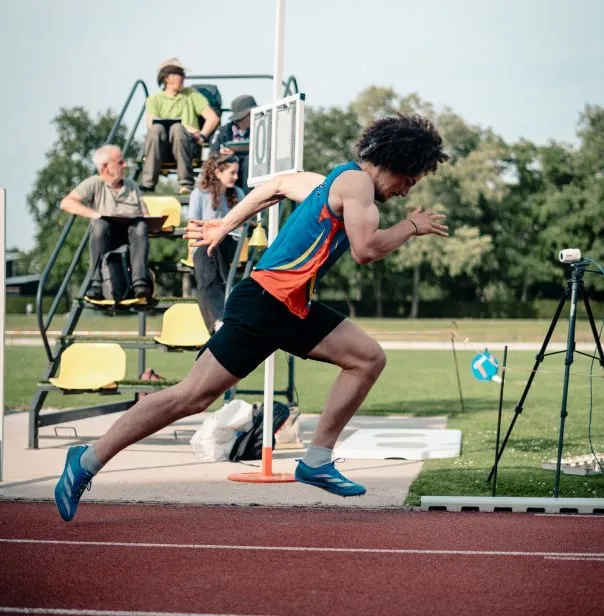
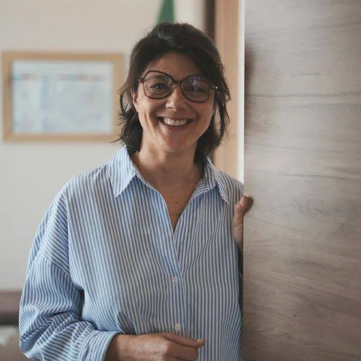
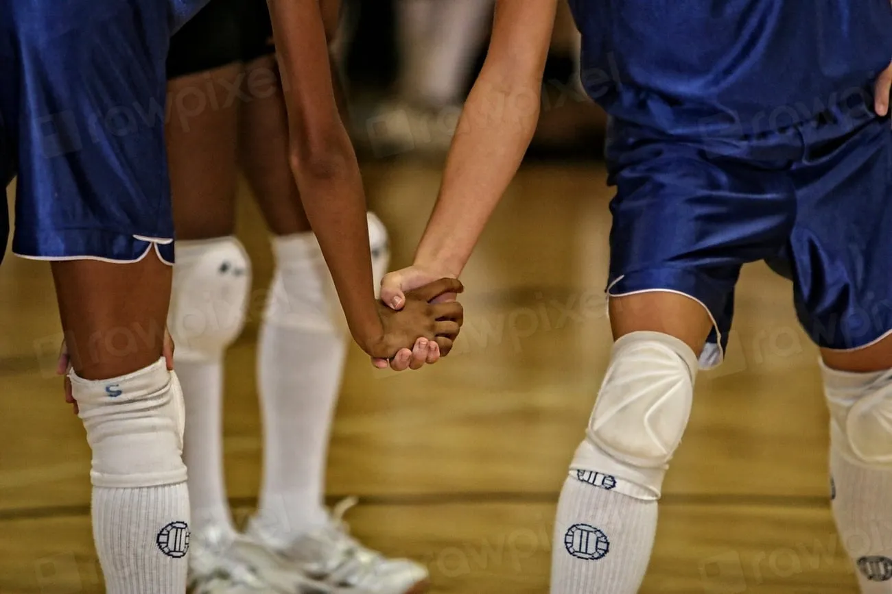

AthlétismeTrès content du travail effectué. Je fais de l’athlétisme : beaucoup de travail réalisé sur la visualisation mentale avant les compétitions.

Muriel CalasPréparatrice mentalePréparatrice mentaleMirepeisset · Narbonne · À distance
Pour sportifs, étudiants et encadrants. À Mirepeisset, en Occitanie ou en visio.
Mon approche
Elle se construit aussi dans la tête.
Vous vous reconnaissez peut-être ici
Stress avant un match ou un examen
Perte de moyens dans les moments décisifs
Difficulté à gérer ses émotions
Manque de concentration
Manque de confiance

Qui suis-je ?
Ancienne joueuse de volley-ball et masseur-kinésithérapeute depuis plus de 25 ans, formée à la préparation mentale par Christian Ramos : j’aide chacun à mieux connaître ses capacités, et à s’en servir quand cela compte.
Pour qui ?
Stress, pression, erreurs dans les moments décisifs… Nous travaillons votre concentration, votre confiance et votre lucidité pour que vous puissiez exprimer votre niveau, en compétition comme à l’entraînement.
Accompagnements & tarifs
Trois formules, à Mirepeisset ou en visio. Séances de 45 min à 1 h.
Débloquer
« Je cible une urgence et je commence à progresser »
Pour débloquer une situation précise.
Comprendre & intégrer
« J’apprends à me connaître et à me perfectionner »
Pour prendre conscience du changement à opérer et commencer à intégrer les bonnes attitudes.
Approfondir & gagner en autonomie
« Je deviens performant(e) »
Pour percevoir plus finement les difficultés rencontrées et maîtriser vos outils de progression.
Témoignages
Témoignage 1 sur 4
À Mirepeisset, près de Narbonne, ou en visio. Un premier échange, sans engagement, pour faire le point.